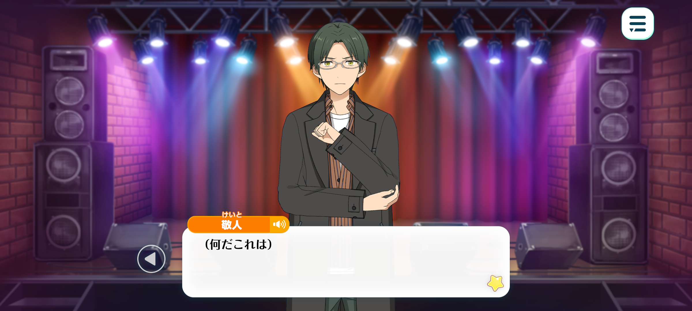
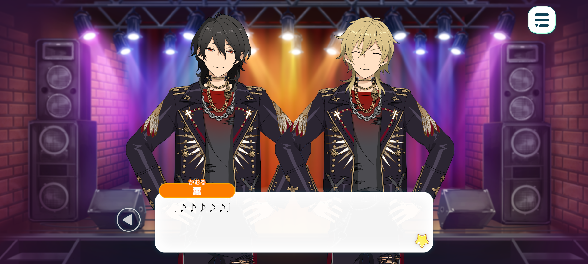
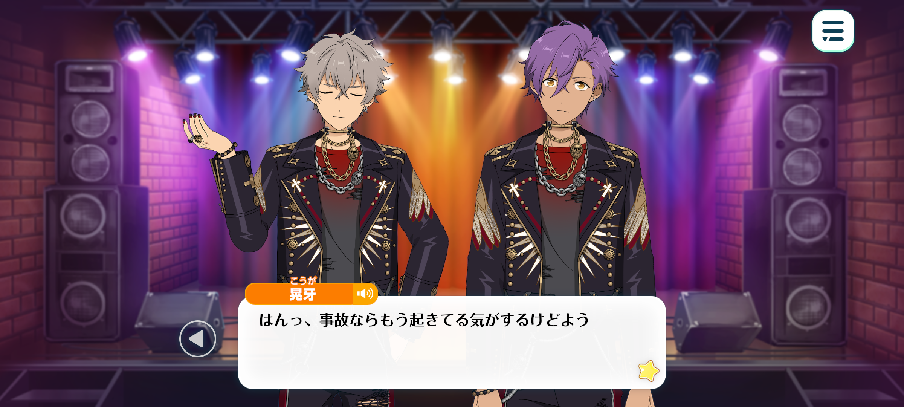
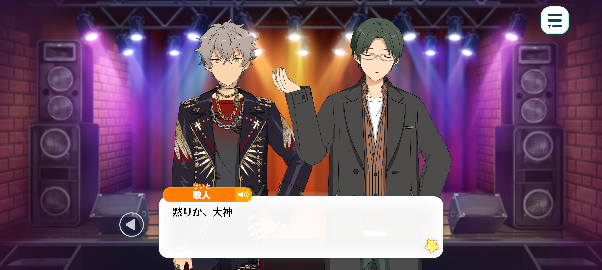
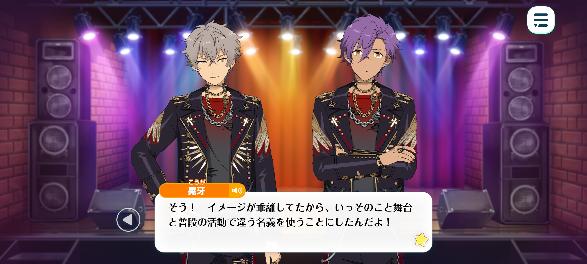
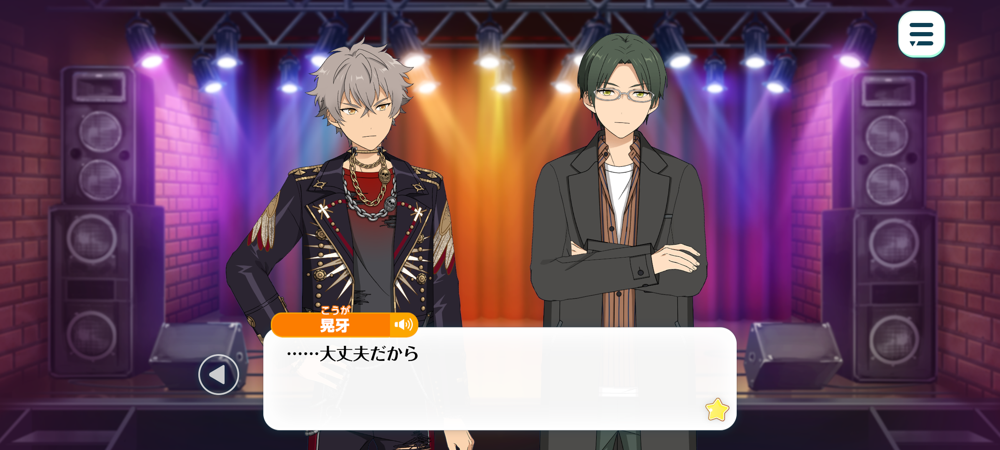

Flashback
Prologue


Season: Winter
Time: Early March in the first year of ES' establishment
Location: In a underground livehouse, one of UNDEAD’s haunts

Keito: (What is this?)
(What on earth is going on...?)

Rei: “♪~♪~♪”
Kaoru: “♪♪♪♪♪”
Koga: “H！E！L！L！”
Adonis: “S！I！N！G!”
Koga + Adonis: “We are HELLSING …☆”
Keito: What sort of nonsense is this—
HELLSING? But that’s clearly UNDEAD!
Rei: “♪~♪~♪”
Kaoru: “♪♪♪♪♪”
Keito: Listen to me! Is this really the time for singing?!
I doubt I'll get a proper answer even if I ask, but there's something I want to talk to you about!

Adonis: —Hmm. Oogami, Oogami. Hasumi-senpai is making a fuss backstage.
I'm not sure how the "Senpais" will react to this, so I think we'd better keep him away from them before something happens.
Koga: Hah! I'd say something's already happened with him being here!
I don't want our important live interrupted, so I guess I'll humour him.
Oi, Shitty Glasses! What d'ya want?
Can't you see we're in the middle of somethin’?
Keito: Let me make one thing clear first: I have no intention of interfering with what you're doing. After all, I'm no longer the vice-president of the Student Council, charged with keeping problem students like you in line.
Koga: God, you sure do know how to fuckin' waffle on and on. Get to the point, then. What d'you want, Mr Ordinary Person Who Just Happens to Look Good in Glasses, and Has Absolutely Nothing to Do with Us?
Keito: It's not as though we have nothing to do with one another. We once stood together on the same stage in matching costumes, and now we even belong to the same agency.
And that is precisely why I, as a representative for Rhythm Link, have gone out of my way to question you.
Even Rhythm Link finds your current suspicious activities unacceptable.
Therefore, I'll deliberately address you as such. As UNDEAD.
—What, exactly, is HELLSING?
Koga: …

Keito: Gone quiet, have you, Oogami?
Can't you explain it to me? After all, as you said yourself, we're now strangers, each belonging to a different units–
Adonis: Please wait a moment, Hasumi-senpai. I don't think Oogami is particularly good at explaining these things.
To be honest, even the rest of us aren't entirely sure what's going on—
Koga: Shut it, Adonis! I’m not some helpless child who needs someone t’speak on their behalf, so stop buttin’ in with unnecessary comments!
Adonis: But Hasumi-senpai might be able to offer us some useful advice—
Koga: Shut up! He fuckin’ said it himself, didn't he? He's got nothin’ to do with us anymore!
So don't go stickin’ your nose into our business now, actin’ like you're our guardian or something, Shitty Glasses!
Keito: That wasn't my intention... I really am worried about you all—or rather, I'm worried about you.
I always seem to leave Oogami carrying burdens that I should be shouldering myself.
Koga: Hmph! Don't go apologisin’ now! I took those “burdens” on willingly, y'know!
...Seriously, there's no need to worry about me. HELLSING is essentially just an alternative name that UNDEAD uses when we're performin’ on stage.
Lately, there's been a growing gap between our image as a hardcore rock band onstage and the silly shit we do on variety shows, ‘n stuff like that...

Adonis: A gap between the two?
Koga: Yeah, exactly! The two images had become so different that we figured we might as well use separate names for our stage performances and our other activities.
I've heard it's pretty common in that manga you love so much. Y'know, how manga artists sometimes use different names depending on where they're publishin’ their work.
Keito: Hmm... I suppose that's true. Some manga artists use different names for their doujinshi and commercial work, or for their adult-oriented and general-audience work.
Though their fans can usually tell it's the same artist from their drawing style.
Adonis: I'm not particularly knowledgeable about manga, but perhaps you could think of it as a parent company establishing separate subsidiaries, each with its own brand to suit the nature of its business.
Our more extreme, unconventional activities, so to speak, will be carried out under the name HELLSING, while our other, more approachable, idol-like activities will continue under UNDEAD.
Only the name and the nature of our activities are changing. The members themselves remain the same: myself, Oogami, Sakuma-senpai, and Hakaze-senpai.
Keito: Why go to the trouble of giving something like this a different name...?
Koga: Shuddup! We've got our reasons for doing things this way. You're not even a producer so don't go tellin' another unit how to run their activities!
Keito: ...

Koga: ...It’s fine, man.
This is what I wanted. And honestly, even if the fans are a little confused, most of them seem happy with it.
I can breathe so much easier now than I could when I was bein' made to do all those ridiculous variety shows and stuff.
So this is fine. All of it.
I'm tellin' you it's fine, so if you've got nothing to do with this, just shut up!
Koga: “♪~♪~♪”